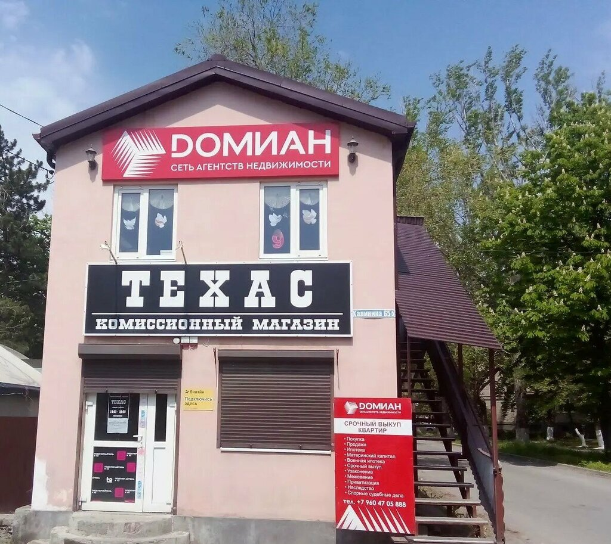

Новочеркасск / ОктябрьскийСвой офис.
Свой офис.
В своём городе.
Личный разговор помогает понять задачу и выбрать следующий шаг. Приходите обсудить покупку, продажу или подбор недвижимости.
Собственник офиса
Андрей Сафронов
Начните с разговора: какой объект ищете или продаёте, где хотите жить и какие условия для вас важны.
+7 951 519-55-59Как помогает офис
- Покупка: параметры, район и бюджет.
- Продажа: описание объекта и порядок работы.
- Документы: вопросы перед просмотром и сделкой.
- Переезд: расходы и расчёт по вашим условиям.

Хороший выбор начинается
с разговора.
Расскажите о задаче. Район, объект и следующий шаг обсудим вместе.